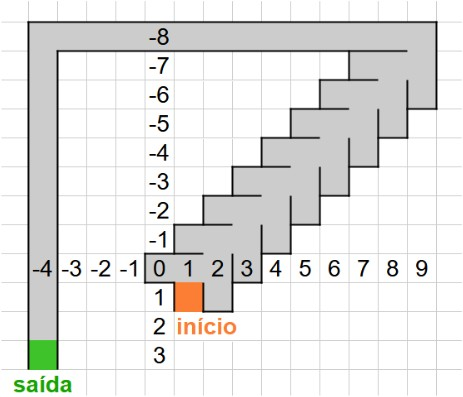

O Experimento do Labirinto Escuro
Guia Teórico-Metodológico
Quão surpreendente seria descobrir que um problema pode ser resolvido de maneira mais eficaz quando não se sabe ao certo onde se encontra o objetivo final? Essa possibilidade paradoxal está atrelada a um fenômeno da nossa cognição: focar excessivamente em um objetivo final e específico pode nos deixar alheios às regras de organização e disposição das etapas intermediárias, necessárias para o alcance da meta almejada, o que pode atrasar e dificultar a resolução de um problema (Eysenck e Keane, 2017).
Segundo Newell e Simon (1972), o enfrentamento de um problema em que precisamos sair de um estado inicial para alcançar um objetivo final bem especificado, ativa uma estratégia cognitiva padrão denominada Análise de Meios e Fins, que consiste em avaliar constantemente a distância entre o seu estado atual e o estado de meta (o objetivo final), dividir as etapas de resolução em submetas e escolher ações (operadores) que reduzam essa distância progressivamente.
Embora seja uma ferramenta cognitiva comumente utilizada para atingir um objetivo prático imediato, há problemas em que aplicar a Análise de Meios e Fins pode prejudicar a busca por uma solução. Partindo dessa constatação, Sweller e Levine (1982) propuseram o denominado Experimento do Labirinto (Maze-tracing Experiment) para observar o comportamento dos participantes ao tentar encontrar o caminho correto até a saída de um labirinto, comparando-se o desempenho entre a condição de meta especificada (local da saída revelado no início) e a condição de meta não especificada (local da saída não revelado). O detalhe crucial é que o labirinto foi elaborado de maneira a tornar a Análise de Meios e Fins uma estratégia inadequada para se buscar a saída.

O intuito dos pesquisadores era testar a seguinte hipótese: na condição de meta especificada, a Análise de Meios e Fins será ativada, sendo a atenção atraída para a saída e para o cálculo de “distância até o alvo”; na condição de meta não especificada, a Análise de Meios e Fins não pode ser empregada, dando lugar a outra estratégia (e.g., tentativa e erro), em que o indivíduo analisa os feedbacks de cada erro e acerto, induzindo regras gerais sobre o caminho a ser percorrido.
Os experimentos foram realizados pelos autores em formato físico, em que os participantes permaneciam vendados e percorriam um labirinto traçado em relevo em uma placa de plástico rígido, cujo caminho consistia em uma linha principal com várias ramificações perpendiculares, e em formato digital, no qual os participantes percorreram um caminho virtual, pelo uso das setas direcionais do teclado, sem visualizar o desenho das paredes do labirinto na tela.
Em ambos os formatos (físico e digital), os participantes foram divididos em duas condições:
- Grupo com meta especificada: com a identificação do ponto de chegada (pelo toque da mão não dominante, no formato físico, e pela indicação de um quadrado na tela, no formato digital);
- Grupo com meta não especificada: não havia nenhuma indicação de onde ficava o ponto final. Apenas explorava os caminhos possíveis, até o ponto de chegada.
Os resultados dos experimentos revelaram o impacto da especificação das metas durante a resolução do problema. Nos testes físicos, o grupo com meta especificada apresentou mais dificuldades para encontrar o objetivo final, mas ambos os grupos resolveram o labirinto. Neste caso, foi possível identificar que a meta especificada atraía a atenção, mas isso não impediu que os participantes superassem as etapas que os levavam até o objetivo.
Diferentemente, com relação ao experimento realizado em formato digital, constatou-se que 80% dos participantes do grupo com meta especificada falharam completamente em resolver o labirinto dentro do limite de movimentos permitidos (298), enquanto todos os participantes do grupo sem meta especificada resolveram o desafio rapidamente (com uma mediana de apenas 38 movimentos).
É possível inferir que, sem a especificação da meta visual e a ausência de enfoque no cálculo da “distância até o alvo”, a atenção pôde ser dedicada à descoberta da disposição do caminho, de modo que pudessem identificar rapidamente a alternância padrão de movimentos no labirinto e navegar com facilidade até a saída.
Em que pesem as diferenças encontradas, em ambos os formatos os resultados apontaram para a mesma conclusão: o conhecimento prévio de metas específicas pode dificultar a resolução de problemas.
A nossa versão
A versão do experimento do labirinto em formato digital, apresentada nesta coleção, foi adaptada a partir do formato original criado por Sweller e Levine (1982, p. 467), e é representada pelo desenho abaixo:
Os participantes devem percorrer o caminho seguindo um dos sentidos para cima, baixo, esquerda ou direita, utilizando-se das setas do teclado de seu computador. O caminho foi disposto por meio de imagens que simulam um labirinto escuro, sem que os participantes consigam enxergar todas as paredes, conforme imagens abaixo:

Assim como no experimento original, ao alcançar os dois corredores longos no final do labirinto, o participante é automaticamente conduzido até o próximo ponto de conversão - tal como seria possível em um labirinto real, quando não encontraria obstáculos à sua frente, ao percorrer as duas retas.
Descrição dos dados
Os dados individuais fornecidos pelo Psytoolkit são organizados em uma tabela, sem indicar o que as linhas e colunas representam. Nesse experimento, as linhas da tabela correspondem a cada vez que o participante pressiona um dos botões de resposta (setas para cima, baixo, esquerda e direita). As sete colunas da tabela são as seguintes:
- Coluna “grupo”: indica em qual dos dois grupos o participante foi testado (meta especificada ou meta não especificada);
- Coluna “cliques”: quantidade cumulativa de pressões dos botões de resposta (setas para cima, baixo, esquerda, direita);
- Coluna “movimentos”: quantidade cumulativa de movimentos no labirinto;
- Coluna “botão”: indica o botão de resposta que foi pressionado. Os códigos 1, 2, 3 e 4 representam, respectivamente, os botões de seta “para cima”, “para baixo”, “esquerda” e “direita”;
- Coluna “x”: coordenada horizontal da localização do personagem;
- Coluna “y”: coordenada vertical da localização do personagem;
- Coluna “Tempo de resposta”: tempo entre o último clique e o clique anterior (ou o início da tarefa).

A figura das coordenadas do labirinto mostra que as coordenadas do início são [x = 1; y = 1]; as coordenadas da saída são [x = -4; y = 3]. Assim, a tabela traz informações sobre o comportamento do participante no labirinto. No experimento, quando o personagem chega à posição [x = -4; y = -7], ele é transportado automaticamente para a saída. Por isso, a linha da tabela com os valores -4 e -7 nas colunas x e y será necessariamente a última. Nessa linha, a coluna “movimentos” traz a principal medida do experimento: o número de movimentos que o participante realizou para chegar à saída. De fato, para a análise principal, precisaremos apenas desse número e do grupo em que o participante foi testado.
Análise dos dados
Como no estudo original, manipulamos a especificidade da meta ao estabelecer dois grupos de diferentes participantes a serem comparados: meta especificada × meta não especificada. Assim, para observar o efeito dessa manipulação sobre o número de movimentos, basta comparar os dois grupos. Vale notar que a atribuição dos participantes aos grupos não foi idêntica à apresentada no estudo original. Aqui, cada participante é atribuído aleatoriamente a um dos dois grupos antes de iniciar a tarefa, sem que sejam considerados os demais participantes. Essa é uma forma de simplificar a coleta de dados, ao preço de não dividir o número de participantes igualmente entre os grupos.
Para verificar se os dois grupos diferem significativamente, empregaremos o teste U de Mann-Whitney. A razão dessa escolha é que:
- não esperamos que a variável dependente (número de movimentos) apresente distribuição normal (gaussiana);
- a comparação de interesse é realizada entre dois grupos independentes – em outras palavras, a variável preditora “especificidade da meta” é um fator entre-participantes com dois níveis.
O teste U de Mann-Whitney é um teste não-paramétrico para duas amostras independentes, baseado na ordenação dos dados (rankings), que não faz suposições rígidas sobre sua distribuição ou sobre parâmetros como média e desvio padrão. Isso garante robustez diante de assimetrias na distribuição dos dados, como aquelas causadas por uma concentração maior de casos com um número de movimentos acima do que de casos com um número de movimentos abaixo da média.
REFERÊNCIAS
Sweller, J., & Levine, M. (1982). Effects of goal specificity on means-ends analysis and learning. Journal of Experimental Psychology: Learning, Memory, and Cognition, 8(5), 463–474.
Gazzaniga, M. S., Heatherton, T. F., & Halpern, D. (2018). Ciência psicológica (5. ed.). Artmed.
Eysenck, M. W., & Keane, M. T. (2017). Manual de psicologia cognitiva (7.ª ed.). Artmed.
Newell, A. & Simon, H.A. (1972). Human problem solving. Englewood Cliffs, NJ: Prentice Hall.
Vamos experimentar?
Baixar experimento (arquivo HTML)